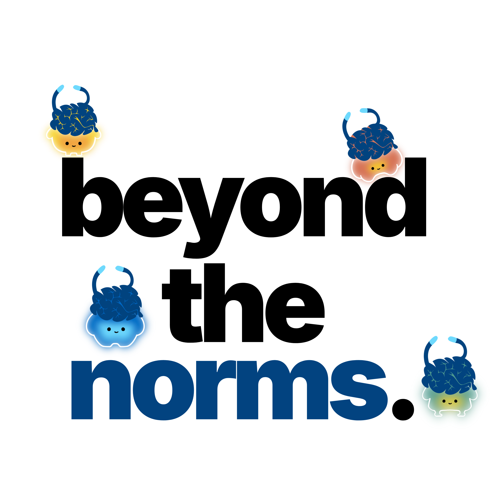
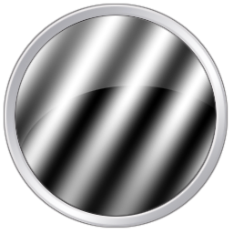
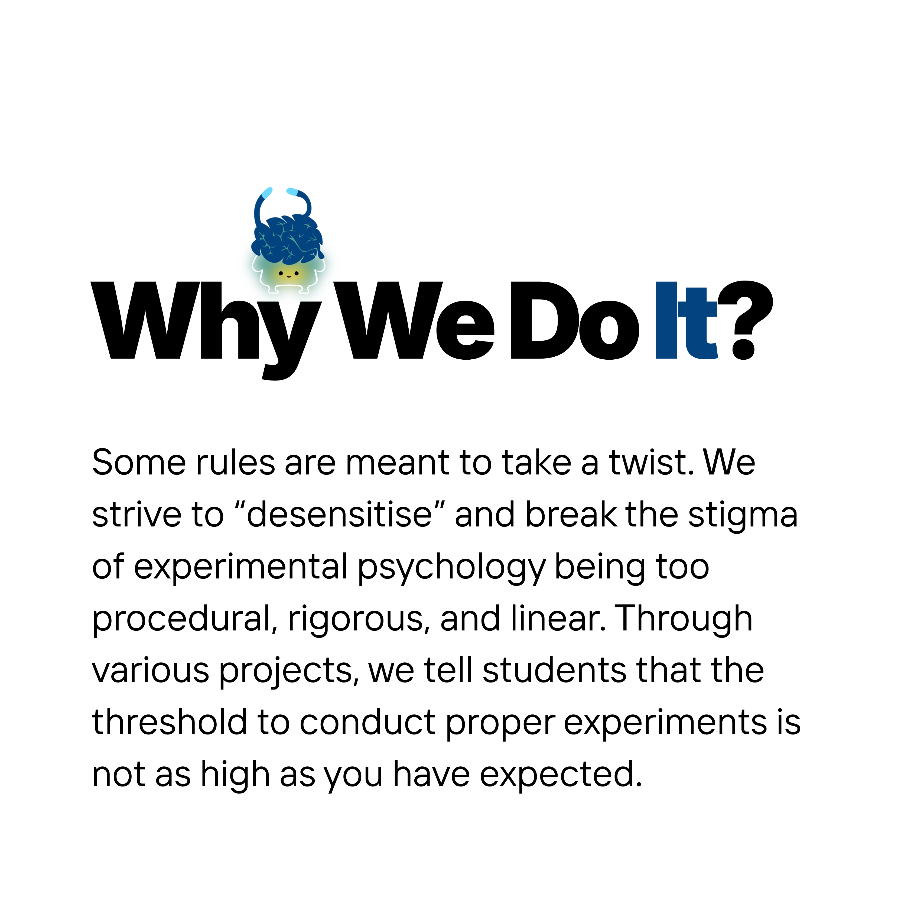

We are
an experimental psychology lab that designs innovative behavioural experiments, create gamified research tasks, and collaborate on everything from developmental studies to case studies, providing early exposure in conducting hands-on psychological experiments and in discovering the various fields of psychology.
12active members
5studies run
1year curious
Some PsychoPy Work

Our Affiliation
PsychoPy
Provides early feedback and testing for new PsychoPy features to support software development and research usability in psychology.
Attention study
Corsi Task
Perception study
Calculator
Memory study
Assessing Risk Taking in Children

01.
Room to Explore
To provide students who are interested in experiments with opportunities and a space conduct psychological experiments.
02.
Fun = Innovation
We believe science should be engaging, accessible, and a little fun. Experiments that spark curiosity can lead to the biggest discoveries!